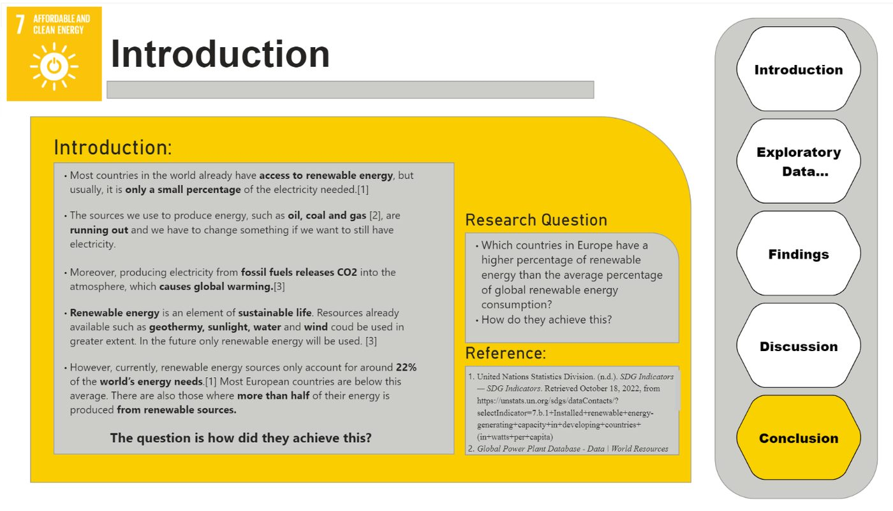
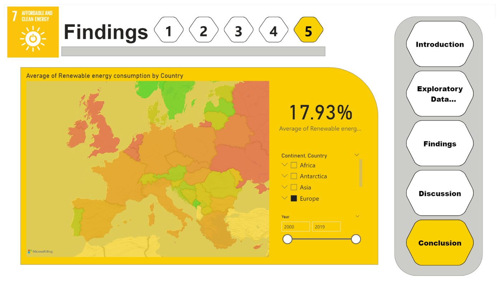
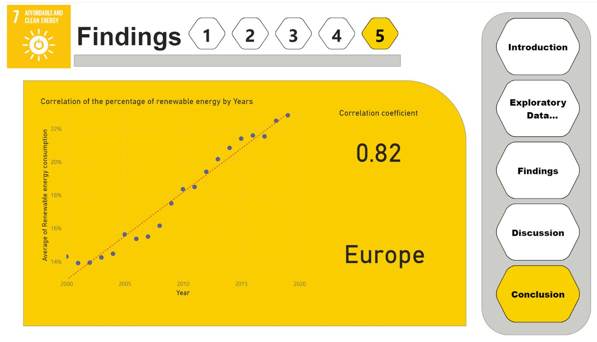

// SDG Hub, BUas · 2022
An analysis of renewable energy consumption in Europe
A project on Sustainable Development Goal 7, Affordable and Clean Energy, in collaboration with the SDG Hub at BUas. The aim was to find European countries that exceed the global average in renewable energy consumption and understand their strategies.
The goal was to track progress towards SDG 7 at a global and country level, with a focus on renewable energy consumption in Europe. Using data from SDGDataBank, I ran exploratory analysis and built an interactive Power BI dashboard to communicate the findings.



The analysis showed a strong upward trend in European renewable energy consumption, with a correlation of 0.82 over time, and was presented to students, mentors, and SDG Hub members.